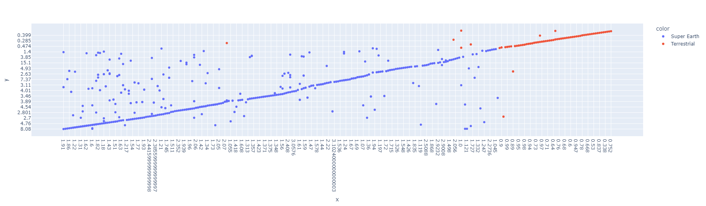

what comes next?
O sistema estelar KOI-351, localizado em Cygnus e descoberto pelo telescópio Kepler,
consiste em uma estrela anã K e pelo menos quatro planetas. Esses corpos celeste
exibem uma dança cósmica com ressonâncias einterações complexas, oferecendo insights
valiosos sobre a diversidade planetária e os processos de formação de sistemas estelares.
Os dados coletados contribuem para o avanço da pesquisa astronômica, revelando detalhes sobre
a atmosfera e composição dos planetas. Este sistema representa uma emocionante área de estudo,
inspirandoa contínua exploração do universo.
.png)
G é uma constante gravitacional, o que significa que será sempre a mesma.
m é a massa da Terra (ou de qualquer outro planeta se estivermos calculando para outro planeta)
r é o raio do planeta
Quanto maior o raio (e maior o planeta), menor será a gravidade.
Quanto maior a massa do planeta, maior será a gravidade.
A gravidade da nossa Terra é de 9,8m/s2 , e nós, como humanos, estamos acostumados a ela. Para podermos existir em qualquer outro planeta, a gravidade deve estar próxima da que temos aqui.
Marte tem uma gravidade de 3,711m/s2 e a Lua tem uma gravidade de 1,62m/s2 .
O valor de G (constante gravitacional) é 6,674e-11
Massa da Terra = 5,972e+24
Raio da Terra = 6371000
.png)
Descubra o fascínio dos gigantes gasosos, como Netuno, o oitavo planeta do nosso sistema solar. Com uma atmosfera dinâmica e ventos velozes, Netuno destaca-se pela sua tonalidade azul intensa devido ao metano presente. Sua exploração pela sonda Voyager 2 revelou características únicas, como anéis tênues e um núcleo rochoso. Netuno, um exemplo cativante de diversidade planetária, continua a inspirar nossa compreensão do cosmos.
.png)
Super-Terras:
Super-Terras são exoplanetas com massas entre a Terra e gigantes gasosos, oferecendo até dez vezes a massa terrestre. Esses planetas despertam interesse científico devido à possibilidade de reterem atmosferas densas, tornando-os candidatos para a busca de vida fora do nosso sistema solar.
Planetas Terrestres:
Os planetas terrestres, como Mercúrio, Vênus, Terra e Marte, possuem superfícies sólidas e atmosferas mais finas. Menores e mais densos em comparação com os gigantes gasosos, esses planetas representam uma categoria habitável, com a Terra sendo um exemplo único, abrigando vida e uma atmosfera rica em oxigênio.
